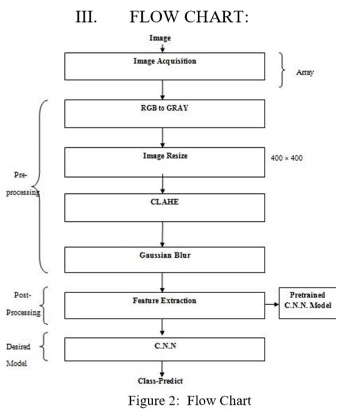
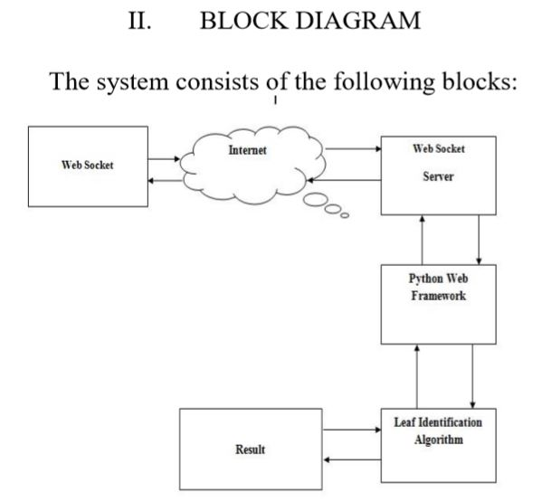
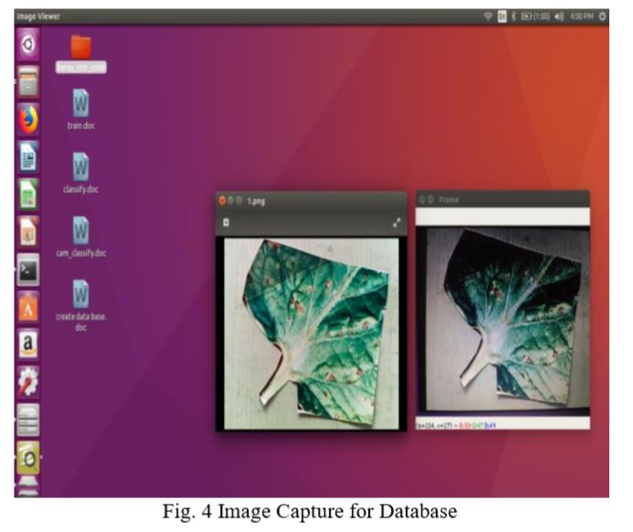
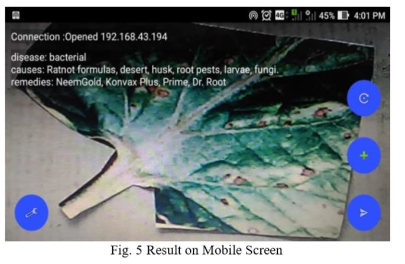

The color imaginary transform, color co-occurrence matrix, feature extraction will be done and get an efficiency.output with a neural network, Back propagation gives efficient groundnut leaf detection with a complex background, in this work we classified only four different diseases with 97 Al % of efficiency. But in the future, the work carried out more diseases by using this method. Paper [6] contain the study of detection of plant diseases and the detection of the infected part of plants. Initially, input images are taken and then image processing is started. Background and Black pixels are both segmented in the first step. Then Hue and Saturation part of the image is also separated. And finally infected part and infected area % and a name of the disease is acquired which is main work using our proposed methodology. The main aim of this work is to provide the advancement and enhancement in computing classifiers of a neural network approach and provide better results. This study contains a unique work that is it will calculate the % of an infected area of plants.
 A. Image Acquisition- The images of the plant leaf are captured through the camera. This image is in RGB (Red, Green, and Blue) for color transformation structure for the RGB leaf image is created, and then, a device-independent color space transformation for the color transformation structure is applied B. Image Pre-processing To remove noise in the image or other object removals, different pre-processing techniques is considered. RGB to Gray Converter-Weighted method or luminosity method-You has seen the problem that occurs in the average method. The weighted method has a solution to that problem. Since red color has more wavelength of all the three colors, and green is the color that has not only less wavelength than red color but also green is the color that gives a more soothing effect to the eyes. It means that we have to decrease the contribution of red color, and increase the contribution of the green color, and put blue color contribution in between these two. So the new equation that form is: New grayscale image = ( (0.3 * R) + (0.59 * G) + (0.11 * B) ). According to this equation, Red has contributed 30%, Green has contributed 59% which is greater in all three colors and Blue has contributed 11%. Image Resize- The resolution of document images is typically higher than 2000 _ 2000, which is too large to be fed to a CNN with the current availability of computing resources. Large input dimension not only costs more computation resources but also leads to a greater chance of overfitting. After Converting RGB image into Gray itresizes into a standard format that is either 400 × 400 for better resolution. CLAHE -Ordinary AHE tends to over amplify the contrast in near-constant regions of the image since the histogram in such regions is highly concentrated. As a result, AHE may cause noise to be amplified in nearconstant regions. Contrast Limited AHE (CLAHE) is a variant of adaptive histogram equalization in which the contrast amplification is limited, so as to reduce this problem of noise amplification. Gaussian blur -In image processing, a Gaussian blur (also known as Gaussian smoothing) is the result of blurring an image by a Gaussian function (named after mathematician and scientist Carl Friedrich Gauss). It is a widely used effect in graphics software, typically to reduce image noise and reduce detail. Convolutional Neural Networks–After removing noise from the image it required to extracts the feature. We propose to use a CNN for document image classification. The main idea is to learn a hierarchy of feature detectors and train a nonlinear classifier to identify complex document layouts. Given a document image, we first perform downsampling and pixel value normalization, then feed the normalized image to the CNN to predict the class label.
 